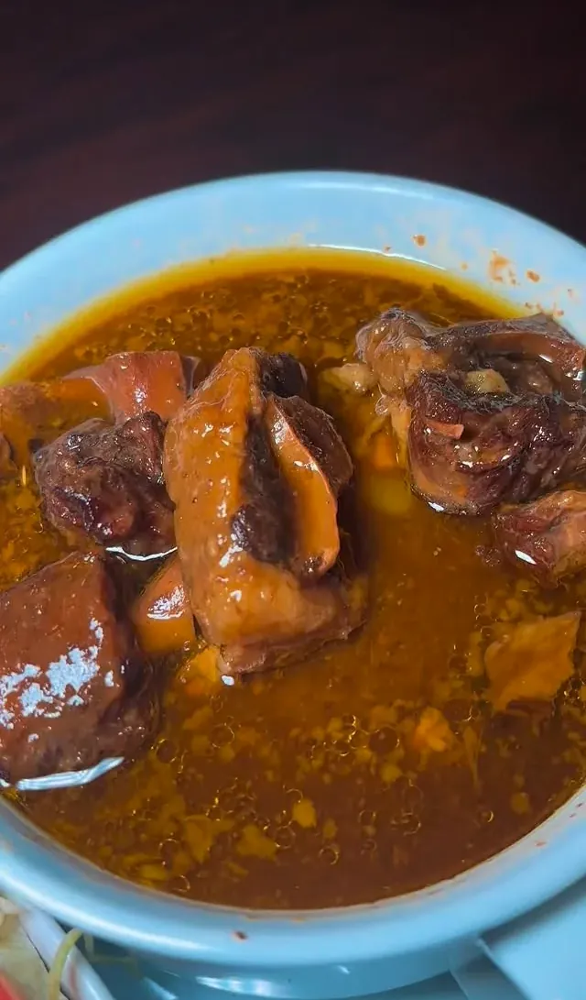
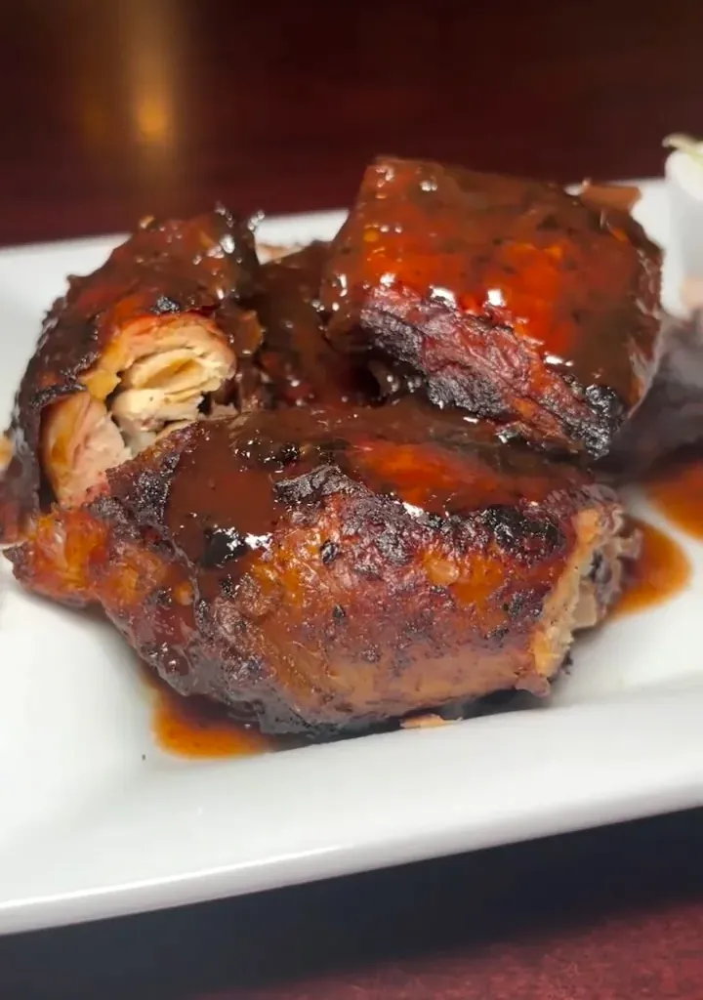
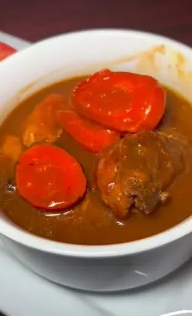
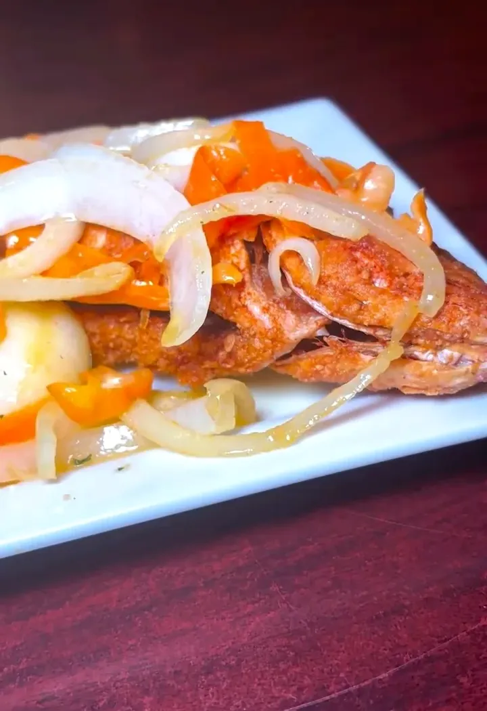
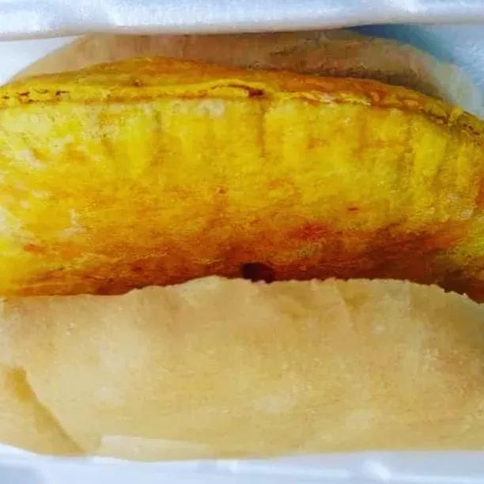
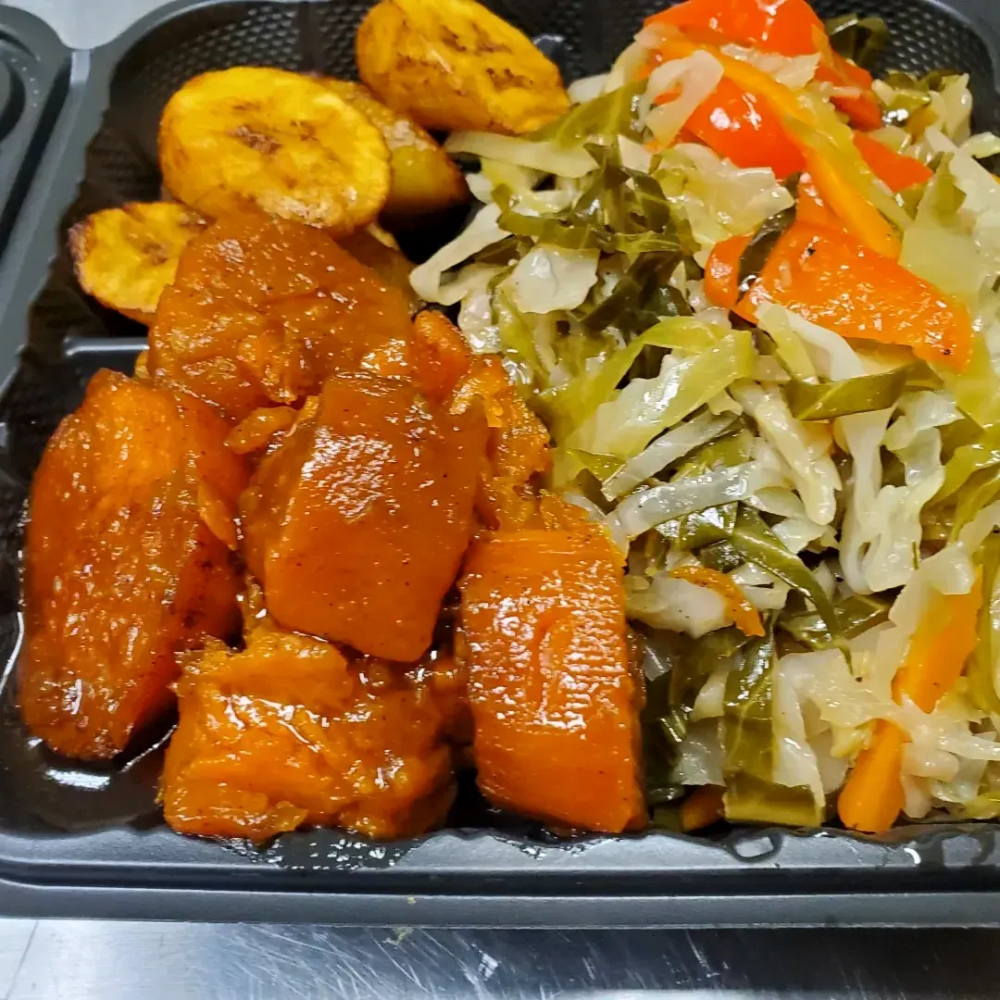
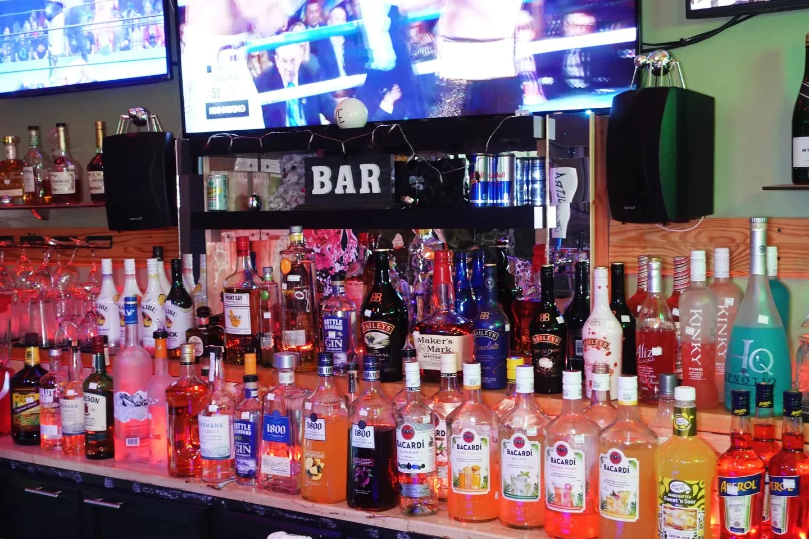

The menu
Jamaican comfort food made from scratch in Short Pump. Every entrée comes with rice & peas or white rice and steamed vegetables.
Prices shown come from the in-house menu board and can change. For anything marked “call for price,” or to check today’s specials, call (804) 664-2283.
Signature Plates
The plates people drive across town for. All entrées come with rice & peas or white rice and steamed vegetables.
Oxtail
Call for priceSlow-cooked, rich and full of flavor. Fall-off-the-bone oxtails in deep brown gravy, served with rice & peas.
SignatureRasta Pasta
Call for pricePenne in a creamy, seasoned sauce tossed with red and green bell peppers. A Friday night special, too.
Friday specialFried Chicken
$17.00Crispy, golden fried chicken with your choice of rice & peas or white rice and steamed vegetables.
BBQ Chicken
Call for priceSaucy barbecue chicken plated with your choice of rice.

Jerk & Wings
Seasoned, flame-kissed and full of island flavor. Wings come by the 8 or the dozen.
Jerk Chicken
Call for pricePerfectly seasoned, flame-kissed jerk chicken with a smoky, glossy finish.
SpicyWings, 8 pieces
$12.95Pick your style: BBQ, fried, jerk or hot.
Wings, 12 pieces
$17.95Pick your style: BBQ, fried, jerk or hot.
Jerk Wings
Call for priceA Friday night special. Sticky, smoky and made for the DJ set.
SpicyFriday special

Curries & Stews
Slow-simmered Jamaican classics, rich in gravy and served with rice.
Curry Goat
Call for priceTender goat simmered in Jamaican curry.
SignatureCurry Chicken
$16.00Chicken simmered in a golden Jamaican curry sauce.
Brown Stew Chicken
$16.00Slow-stewed, tender and rich, in a savory brown gravy.

Seafood
Fish and shrimp cooked your way. Ask for it fried, steamed or brown stewed.
Snapper Meal
Call for priceA full plate of whole snapper, 1 to 2 lb, made your way: fried, steamed or brown stewed.
Your choice prepWhiting Fish
Call for priceYour choice of preparation.
Your choice prepShrimp
Call for priceYour choice of preparation.
Your choice prepShrimp & Fish Platter
Call for priceShrimp and fish together on one plate.
Whiting Fish Sandwich
Call for priceWhiting fish served sandwich-style.

Patties & Roti
Grab-and-go favorites. A beef patty tucked in coco bread is the classic move.
Beef Patty
$3.50Flaky golden Jamaican patty with seasoned beef.
Chicken Patty
$3.50Flaky golden Jamaican patty with seasoned chicken.
Coco Bread
$3.00Soft, lightly sweet bread. Wrap it around a patty.
Curry Chick Pea & Potato Roti
Call for priceRoti filled with curried chick peas and potatoes.
Meat-freeCurry Chicken Roti
Call for priceRoti filled with curry chicken.
Curry Goat Roti
Call for priceRoti filled with curry goat.

Sides
Round out the plate. Rice & peas comes with every entrée.
Mac n Cheese
$7.00Baked, golden and cheesy.
Fried Plantains
$7.00Sweet, caramelized plantains.
Candied Yams
$7.00Soft, syrupy candied yams.
Steamed Cabbage or Green Beans
$7.00Your pick of steamed cabbage or green beans.
Rice & Peas
IncludedThe Jamaican staple, included with every entrée.

Kids Meal
Smaller plates for smaller appetites. Call for current kids meal pricing.
Chicken Fingers & French Fries
Mac n Cheese with Whiting Fish or Chicken
Drinks
Island sodas, homemade sorrel and lemonade, and a bar that stays busy all weekend. Ask for drink prices when you order.
Homemade Sorrel
Made in house.
House-madeHomemade Lemonade
Made in house.
House-madeJamaican D&G Soda
Classic Jamaican soda.
Ting
Jamaican grapefruit soda.
Snapple
Perrier Water
Bottled Coke
The bar is open: island-inspired drinks all weekend, and $5 drink specials on Friday nights. Ask your bartender what is pouring.

Friday night specials
Every Friday during Yaad Vibes: karaoke from 6 PM and a live DJ from 8 PM.
- Jerk wings
- Rasta pasta special
- $5 drink specials
Please be advised: food prepared here may contain milk, wheat, peanuts, tree nuts, fish and shellfish, among other allergens. Tell your server or the person taking your order about any allergy.